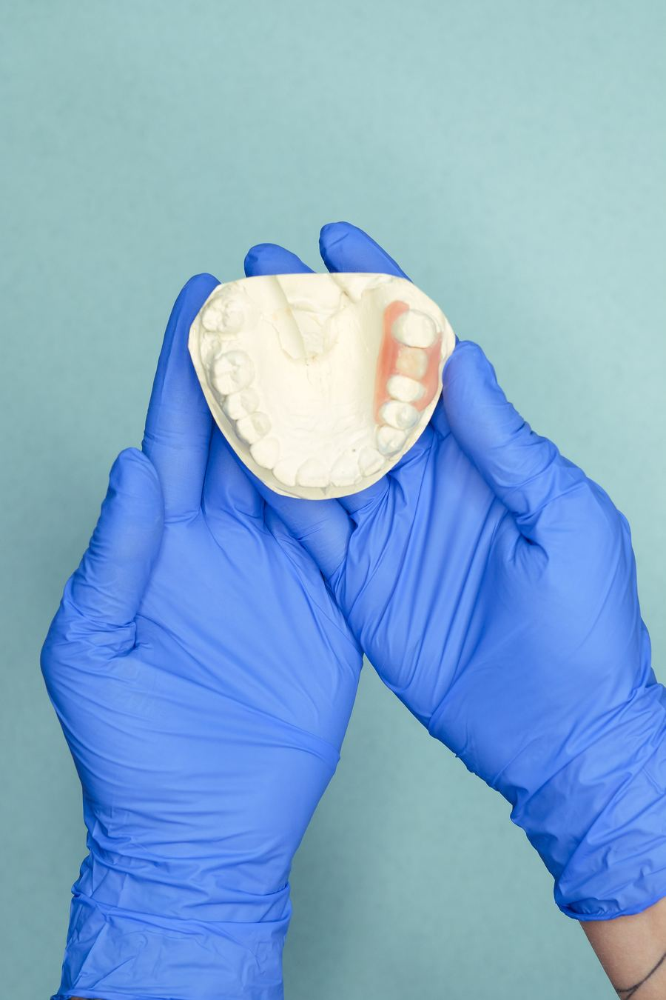

Porcelain crowns, joined together, to fill the gap
A bridge replaces missing teeth with porcelain crowns joined together to look and feel like natural teeth. Every bridge does have limitations, though, based on the length of the bridge and the strength of the supporting teeth.
The success of any bridge depends on its foundation: the other teeth, gums, or bone it's attached to. That's why it's so important to keep your existing teeth, gums, and jaw healthy and strong.
What's new with crowns and bridges?
The materials porcelain crowns and bridges are made of are ever-changing, and at Skyline Dental we're known for using only the latest. The newest materials are as translucent as natural teeth and nearly as strong, often so lifelike that telling them apart from your other teeth is very difficult.
Do you need a bridge, or are you unsure if you do? Contact us and we'll review your options together.